Clouds
Volodymyr Demkiv · 3D gallery room
Clouds is a single work: twenty-five 8 x 10 inch silver gelatin prints of the sky, made by hand by the artist and framed together behind anti-reflective glass. It was shown at photoMIAMI during Miami Art Week 2025 and is offered only as one complete work. The complete work hangs in the first room of a panelled Paris salon, and the 25 prints are shown one by one, large, in the two rooms beyond.
Offered only as one complete work; please inquire.
Works in this room

Clouds · 25 gelatin silver prints, 8 × 10 in each, made by hand by the artist · One work in a single frame with anti-reflective glass · Offered as one work 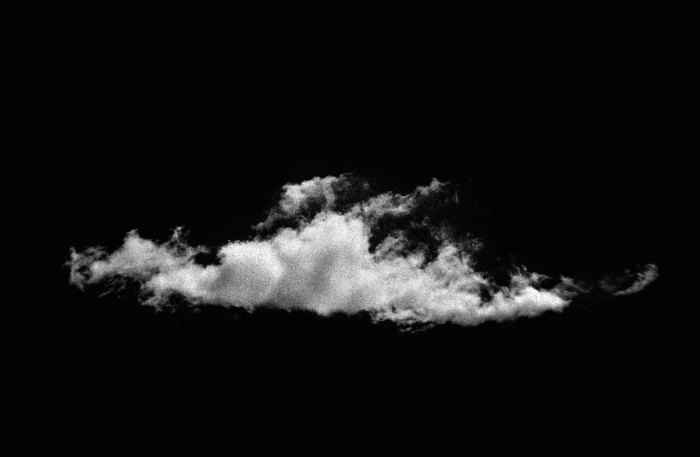
Clouds, print 1 of 25 · One of the 25 gelatin silver prints, 8 × 10 in, made by hand by the artist · Part of the single work Clouds · Offered only as one work 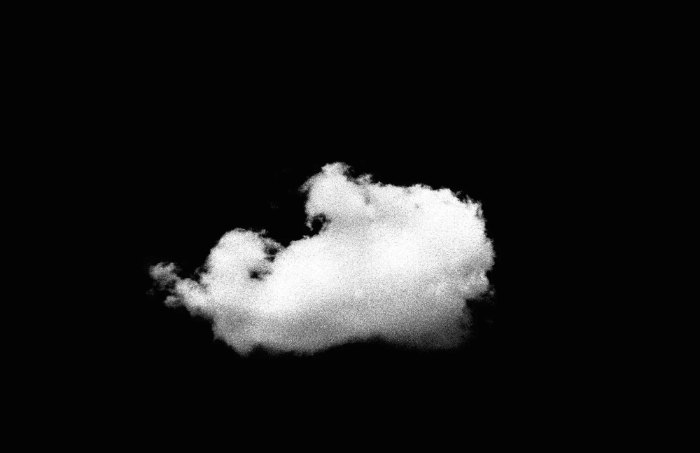
Clouds, print 2 of 25 · One of the 25 gelatin silver prints, 8 × 10 in, made by hand by the artist · Part of the single work Clouds · Offered only as one work 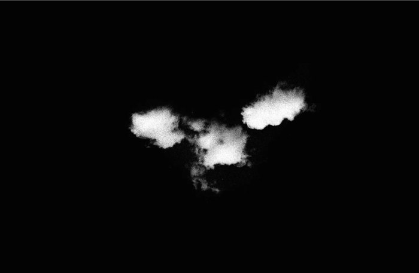
Clouds, print 3 of 25 · One of the 25 gelatin silver prints, 8 × 10 in, made by hand by the artist · Part of the single work Clouds · Offered only as one work 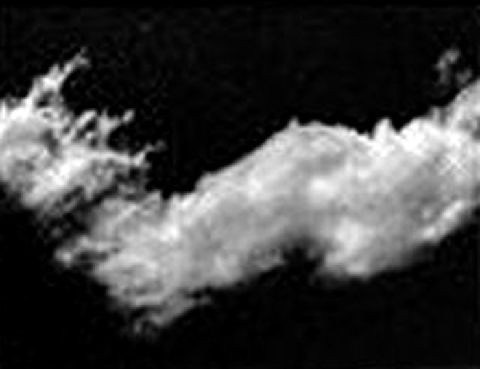
Clouds, print 4 of 25 · One of the 25 gelatin silver prints, 8 × 10 in, made by hand by the artist · Part of the single work Clouds · Offered only as one work 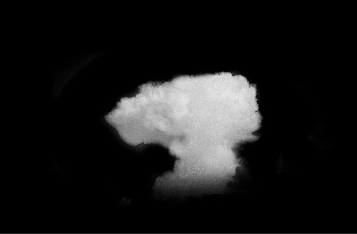
Clouds, print 5 of 25 · One of the 25 gelatin silver prints, 8 × 10 in, made by hand by the artist · Part of the single work Clouds · Offered only as one work 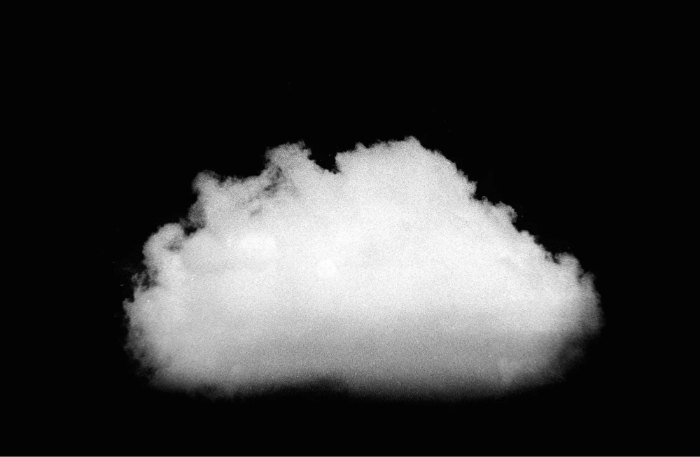
Clouds, print 6 of 25 · One of the 25 gelatin silver prints, 8 × 10 in, made by hand by the artist · Part of the single work Clouds · Offered only as one work 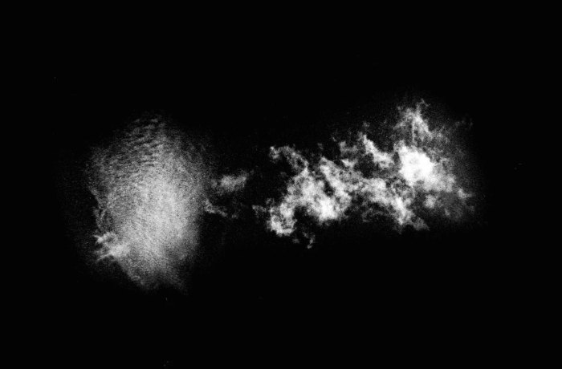
Clouds, print 7 of 25 · One of the 25 gelatin silver prints, 8 × 10 in, made by hand by the artist · Part of the single work Clouds · Offered only as one work 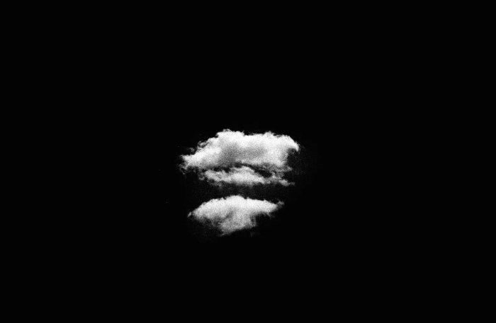
Clouds, print 8 of 25 · One of the 25 gelatin silver prints, 8 × 10 in, made by hand by the artist · Part of the single work Clouds · Offered only as one work 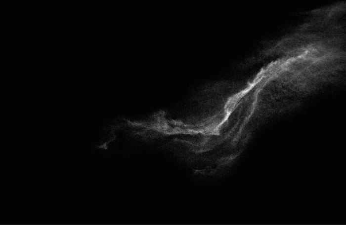
Clouds, print 9 of 25 · One of the 25 gelatin silver prints, 8 × 10 in, made by hand by the artist · Part of the single work Clouds · Offered only as one work 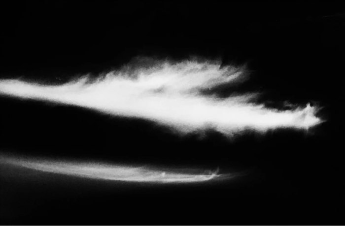
Clouds, print 10 of 25 · One of the 25 gelatin silver prints, 8 × 10 in, made by hand by the artist · Part of the single work Clouds · Offered only as one work 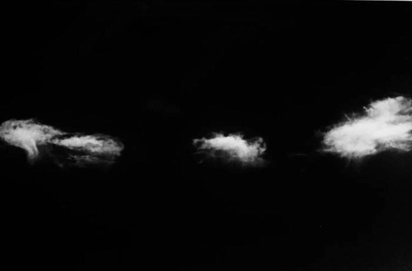
Clouds, print 11 of 25 · One of the 25 gelatin silver prints, 8 × 10 in, made by hand by the artist · Part of the single work Clouds · Offered only as one work 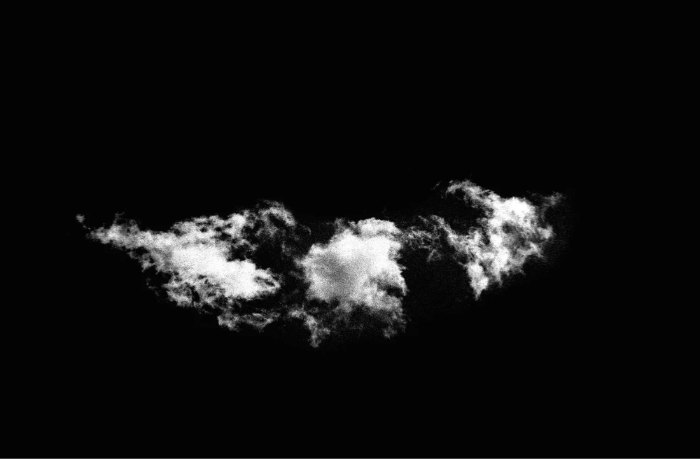
Clouds, print 12 of 25 · One of the 25 gelatin silver prints, 8 × 10 in, made by hand by the artist · Part of the single work Clouds · Offered only as one work 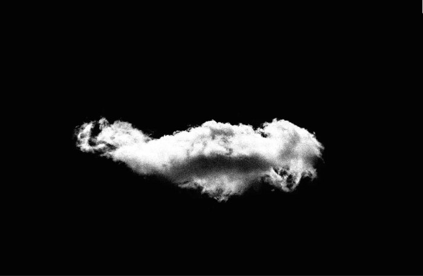
Clouds, print 13 of 25 · One of the 25 gelatin silver prints, 8 × 10 in, made by hand by the artist · Part of the single work Clouds · Offered only as one work 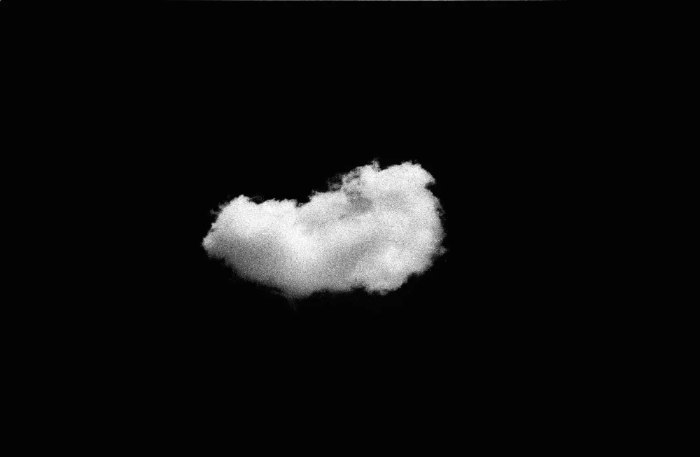
Clouds, print 14 of 25 · One of the 25 gelatin silver prints, 8 × 10 in, made by hand by the artist · Part of the single work Clouds · Offered only as one work 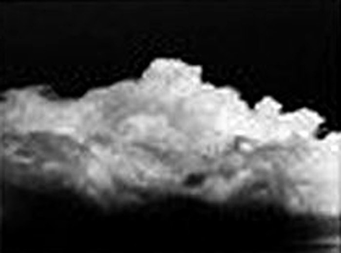
Clouds, print 15 of 25 · One of the 25 gelatin silver prints, 8 × 10 in, made by hand by the artist · Part of the single work Clouds · Offered only as one work 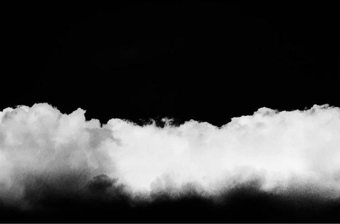
Clouds, print 16 of 25 · One of the 25 gelatin silver prints, 8 × 10 in, made by hand by the artist · Part of the single work Clouds · Offered only as one work 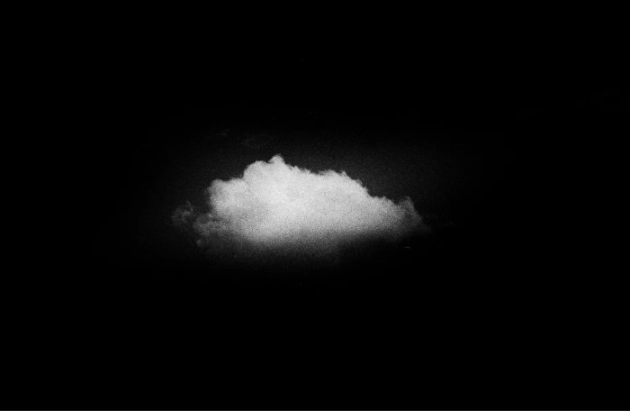
Clouds, print 17 of 25 · One of the 25 gelatin silver prints, 8 × 10 in, made by hand by the artist · Part of the single work Clouds · Offered only as one work 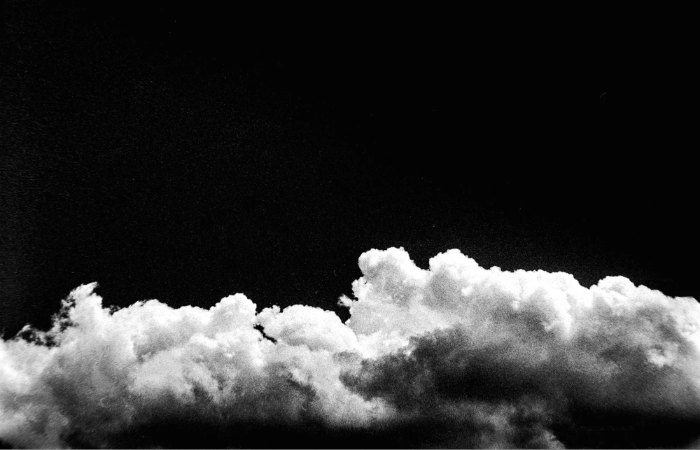
Clouds, print 18 of 25 · One of the 25 gelatin silver prints, 8 × 10 in, made by hand by the artist · Part of the single work Clouds · Offered only as one work 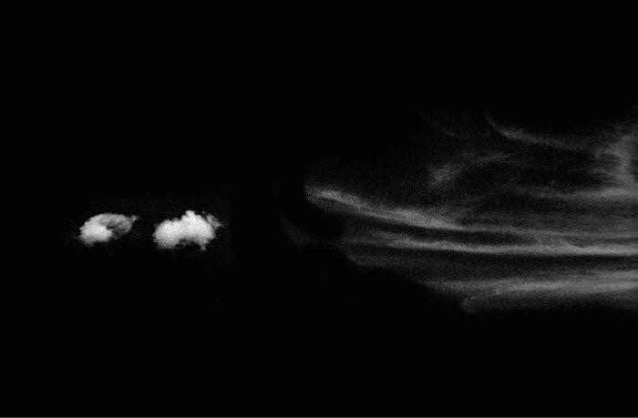
Clouds, print 19 of 25 · One of the 25 gelatin silver prints, 8 × 10 in, made by hand by the artist · Part of the single work Clouds · Offered only as one work 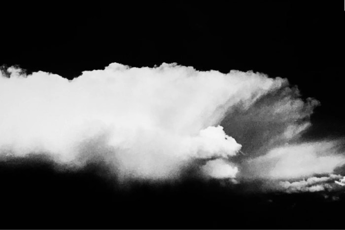
Clouds, print 20 of 25 · One of the 25 gelatin silver prints, 8 × 10 in, made by hand by the artist · Part of the single work Clouds · Offered only as one work 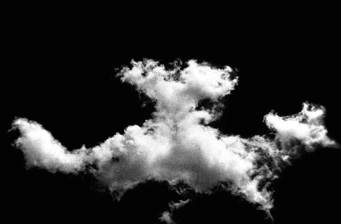
Clouds, print 21 of 25 · One of the 25 gelatin silver prints, 8 × 10 in, made by hand by the artist · Part of the single work Clouds · Offered only as one work 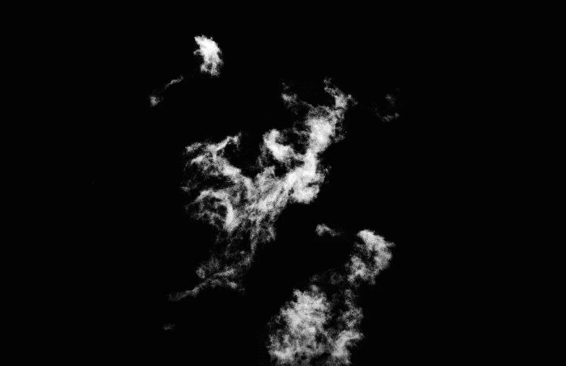
Clouds, print 22 of 25 · One of the 25 gelatin silver prints, 8 × 10 in, made by hand by the artist · Part of the single work Clouds · Offered only as one work 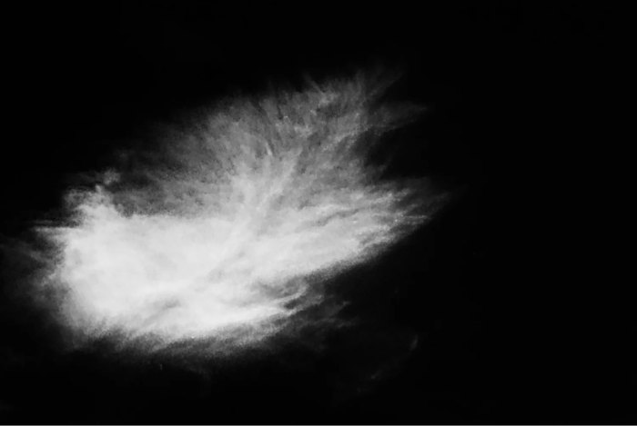
Clouds, print 23 of 25 · One of the 25 gelatin silver prints, 8 × 10 in, made by hand by the artist · Part of the single work Clouds · Offered only as one work 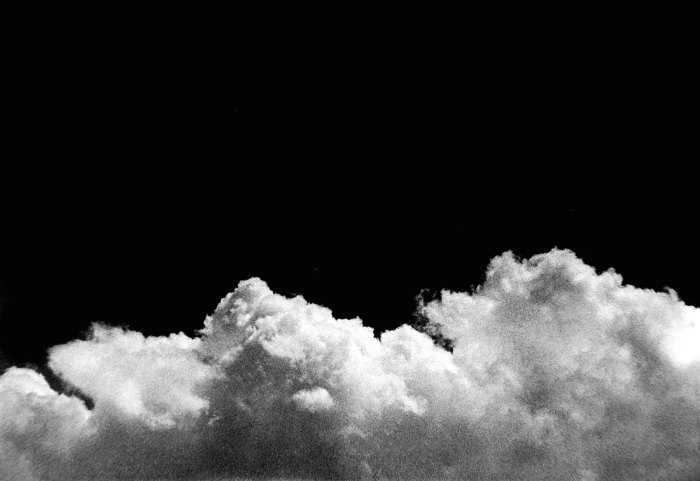
Clouds, print 24 of 25 · One of the 25 gelatin silver prints, 8 × 10 in, made by hand by the artist · Part of the single work Clouds · Offered only as one work 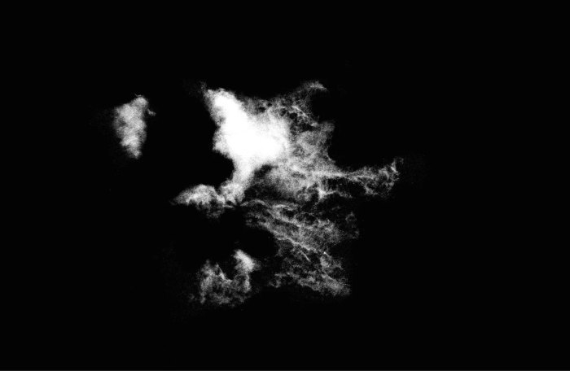
Clouds, print 25 of 25 · One of the 25 gelatin silver prints, 8 × 10 in, made by hand by the artist · Part of the single work Clouds · Offered only as one work